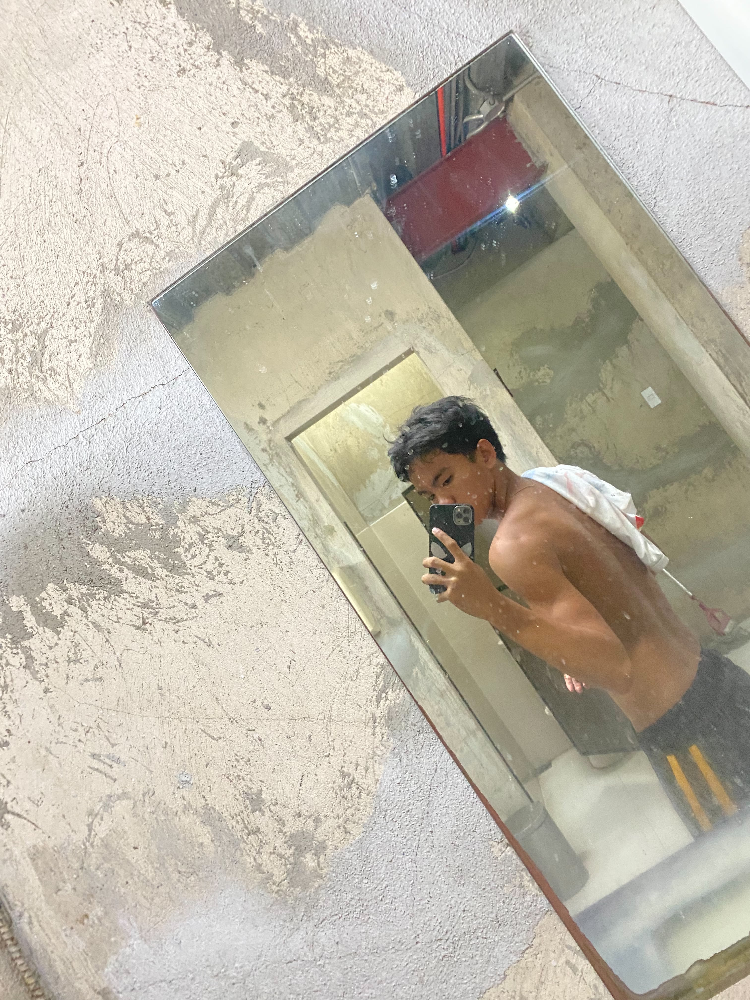

Dowel Jay Paosal, also known as doweljay, is an Information Technology student at NORSU BSC (Negros Oriental State University – Bayawan Campus), taking up BS Information Technology.
He builds software projects ranging from small utilities to full systems, and shares his learning journey online.